Pro společný čas
Společenské zázemí, herna, stolní fotbal a stolní tenis.
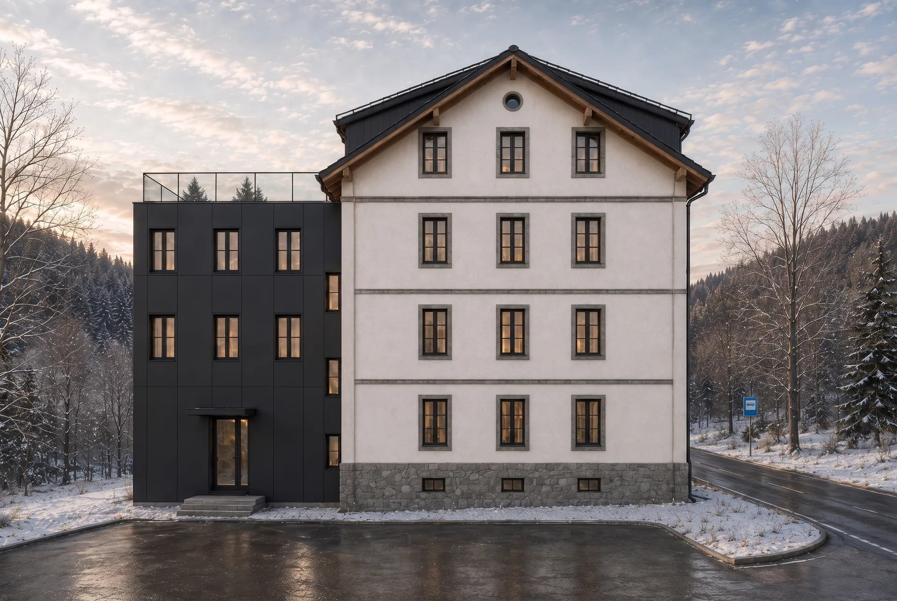
Javorník · východní Krkonoše
Celá Zoja. Jen pro vás.
Dům v Krkonoších pro rodiny, přátele a skupiny, které chtějí být spolu — a přitom mít dost prostoru.
Nový způsob pronájmu
Zoja se nově pronajímá jako celý objekt. Přijedete s rodinou, přáteli nebo vlastní skupinou a dům i jeho zázemí máte pro sebe.
Objekt nabízí ubytovací kapacitu 55+ osob, sedm čtyřlůžkových pokojů, jeden třílůžkový pokoj a čtyři šestilůžkové apartmány. Nově se Zoja nabízí jako jeden celek pro jednu skupinu.
Při uvedeném počtu pokojů a apartmánů je základní kapacita 55 lůžek. Přistýlky lze podle dosavadní nabídky domluvit individuálně. Konečný maximální počet hostů je třeba potvrdit při poptávce.
Zázemí objektu
Společenské zázemí, herna, stolní fotbal a stolní tenis.
Oplocená zahrada, vlastní les, hřiště, ohniště, udírna a gril dávají prostor společnému pobytu venku.
V areálu je vyhřívaný venkovní bazén; v okolí jsou SkiResort Černá hora–Pec a Ski Areál Mladé Buky.
Galerie
Dodané snímky exteriérů a interiérů jsou oddělené od výkresů a 3D vizualizací. Aktuálnost zobrazeného stavu nebyla potvrzena.
Klepnutím na obrázek jej otevřete ve větší velikosti v novém panelu.
01 / Budova a okolí
Tři zimní pohledy na budovu a její umístění v krajině. Jde o dodané obrazové podklady; aktuálnost zobrazeného stavu nebyla potvrzena.
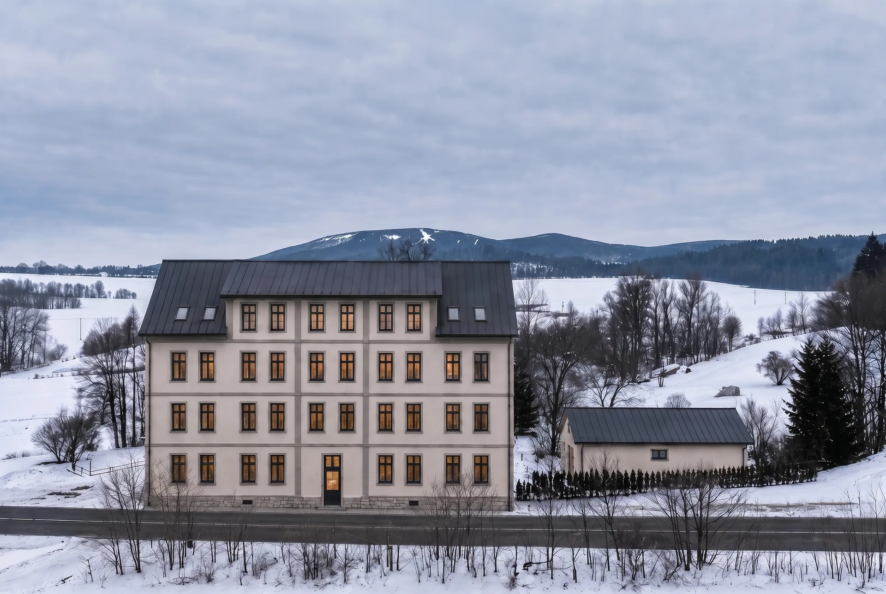
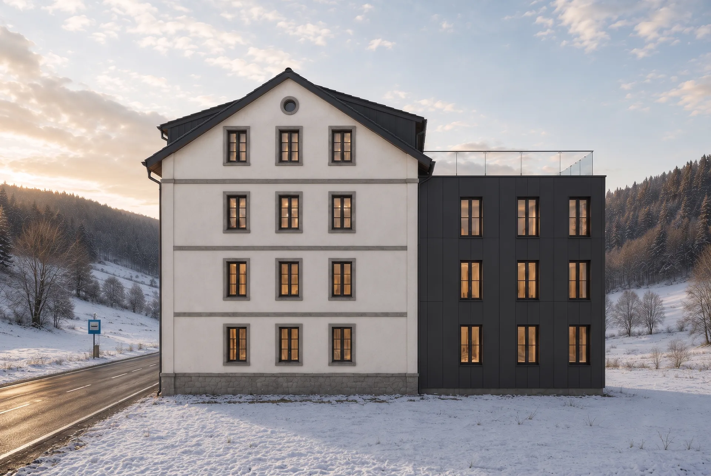
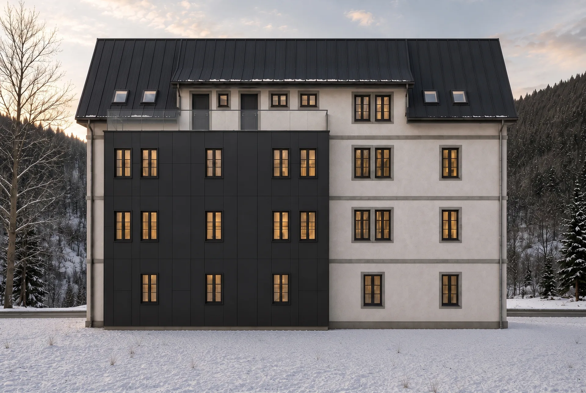
02 / Interiéry
Nejdříve obytná část a kuchyň, potom ložnice, chodba a koupelny. Dodané snímky ukazují podobu vybavení, jejíž aktuálnost je třeba ověřit.
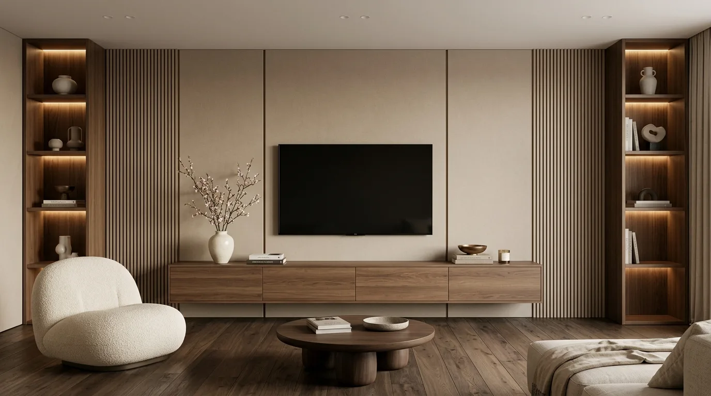
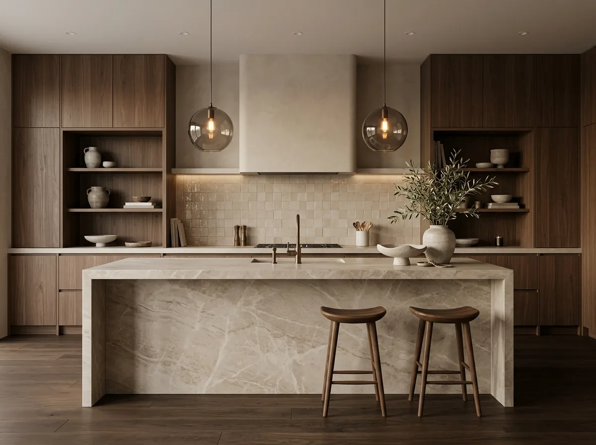
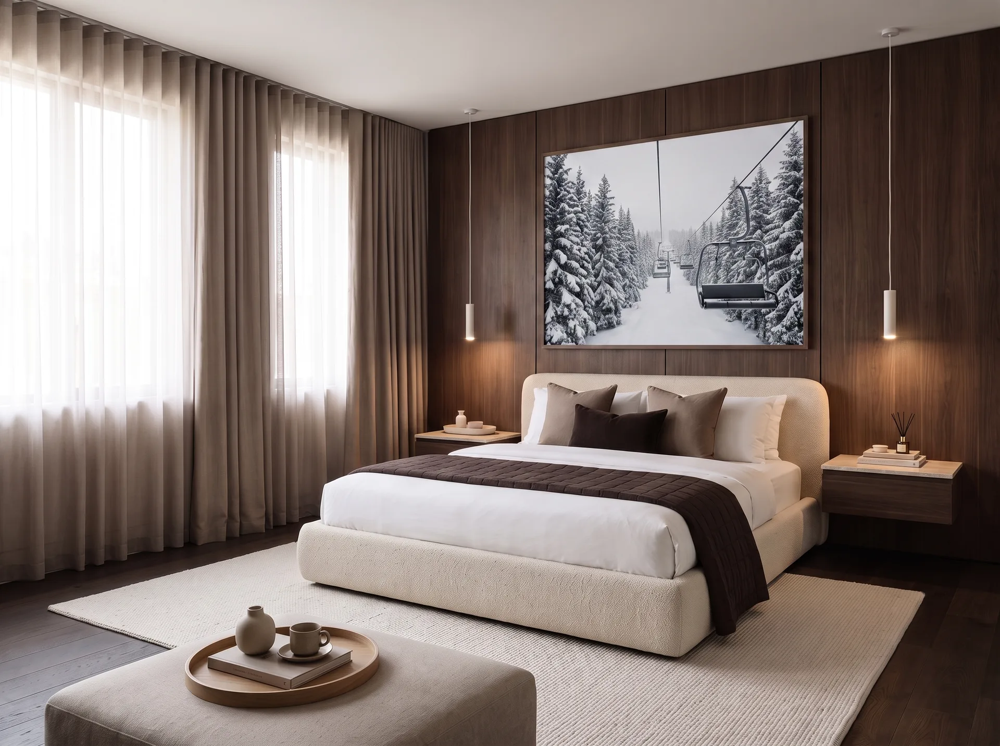
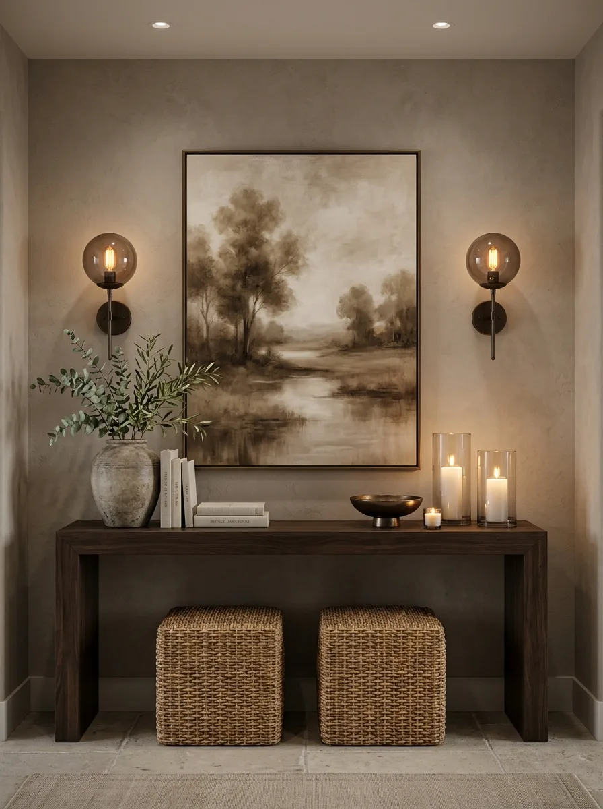
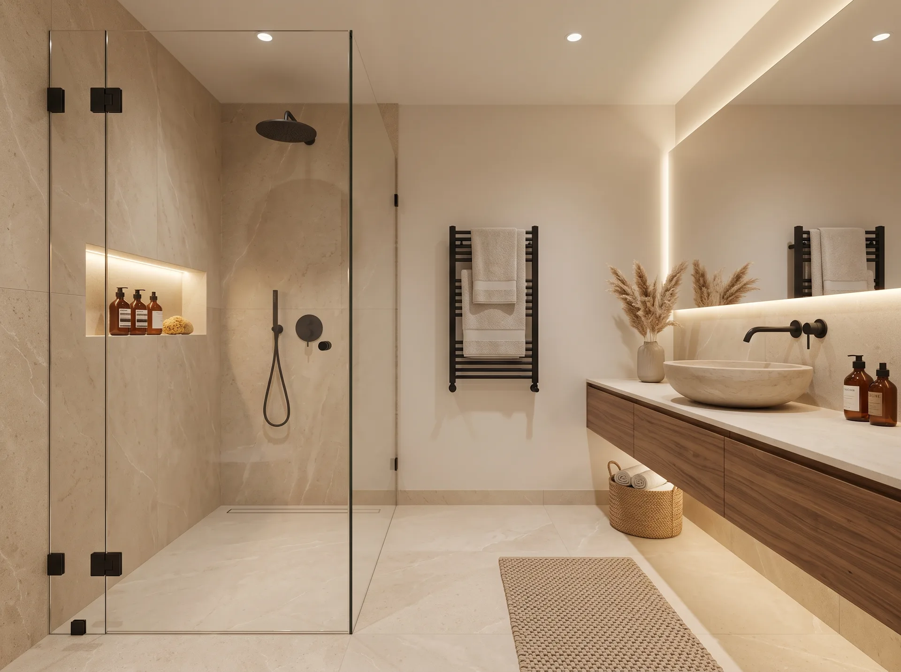
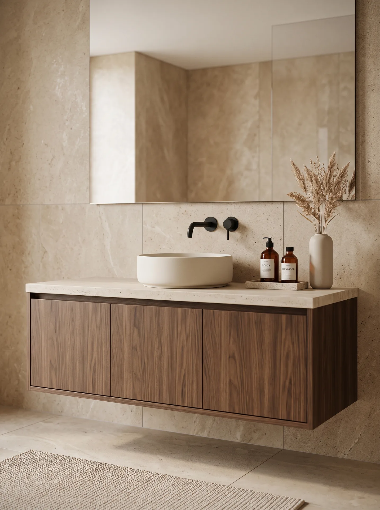
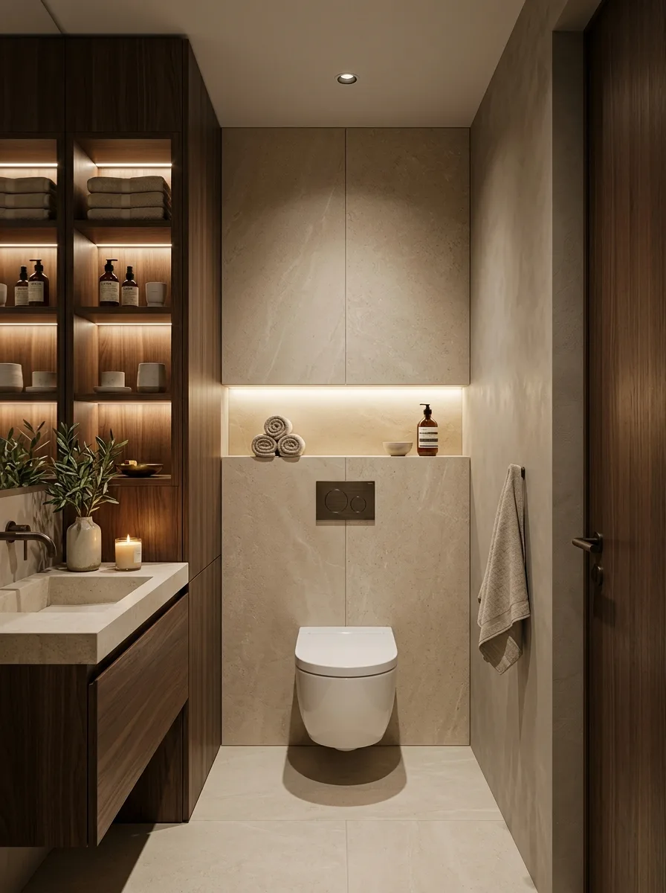
03 / Dispozice a výkresy
Technické dispoziční výkresy a prostorové 3D půdorysy. Tyto podklady ukazují návrhy jednotlivých jednotek; nabídka pobytu je naopak pronájem celého objektu.
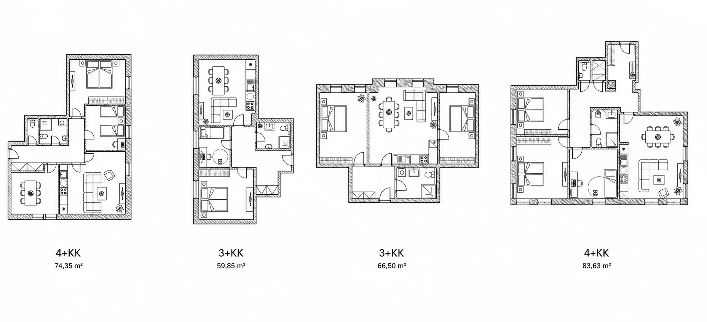
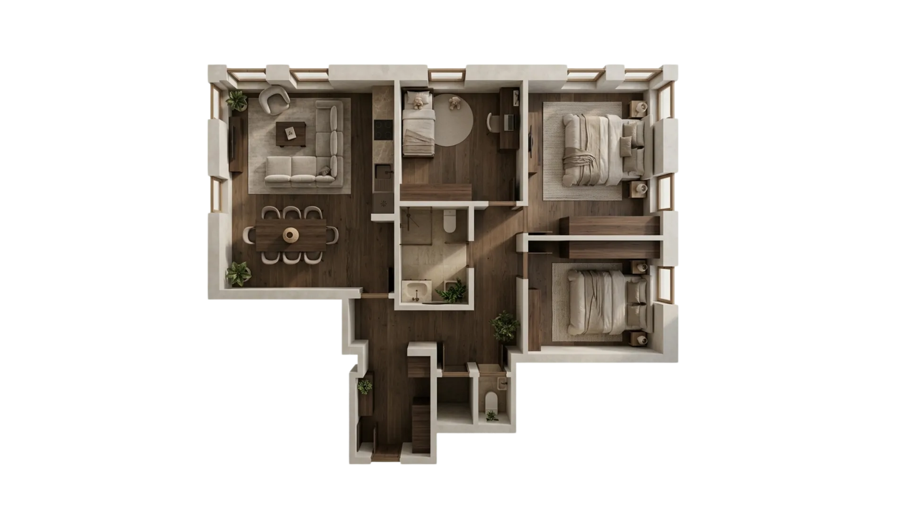
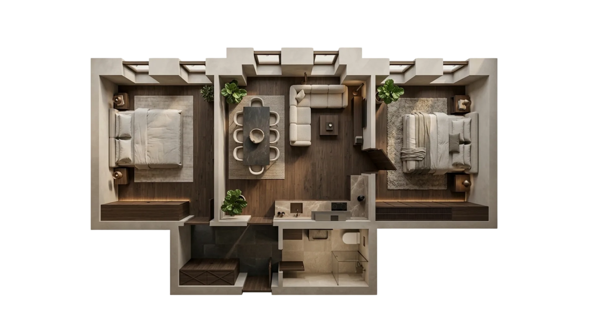
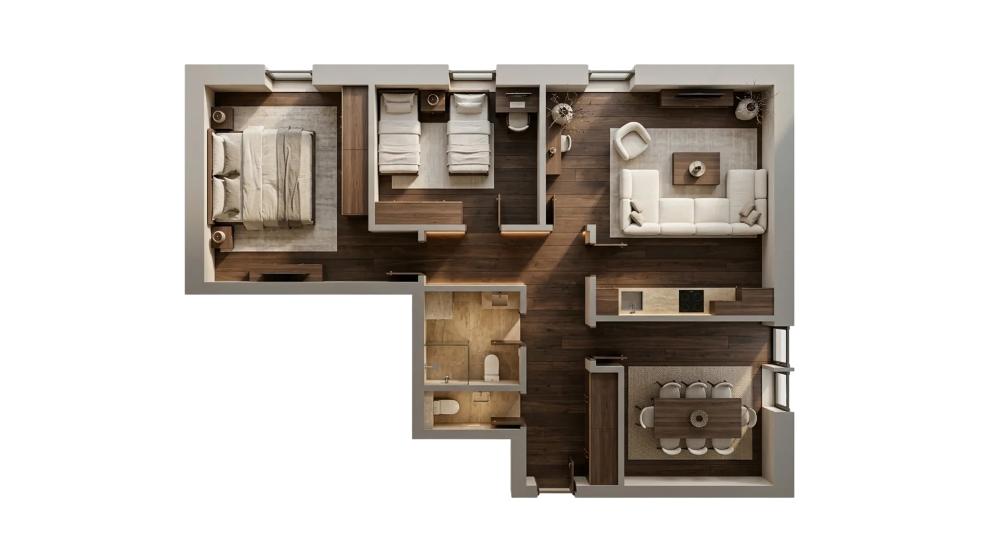
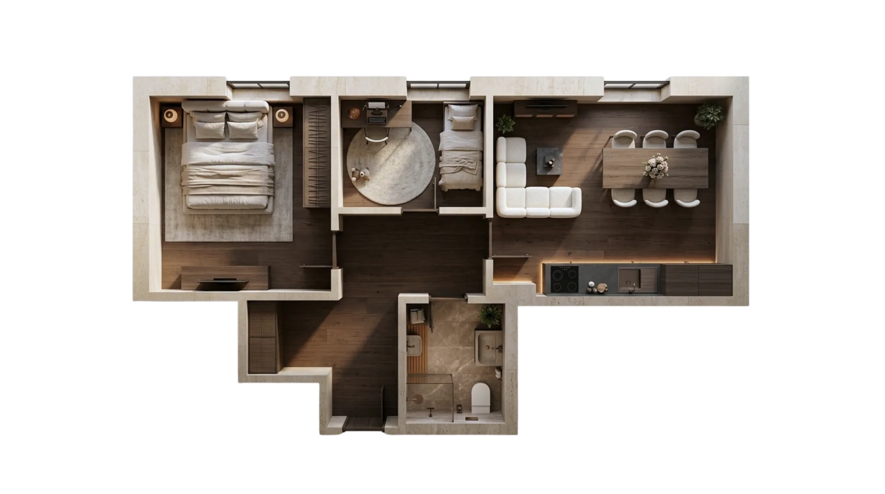
Videoukázka
Dodaný čtyřsekundový videorender ukazuje objekt a okolní krajinu z nadhledu. Nejde o průchod interiérem ani o potvrzení aktuálního stavu budovy. Video se spustí až na váš pokyn.
Celý objekt
Soukromí celého objektu pro větší společnou dovolenou.
Rozsáhlé vnitřní i venkovní zázemí dává prostor pro společný program.
Turistika, cyklotrasy, běžky a lyžování v širším okolí objektu.
Rezervace / dotaz
Pro konkrétní termín, cenu a podmínky pronájmu celého objektu použijte přímý kontakt.
Zoja Krkonoše
Javorník 152
543 72 Rudník